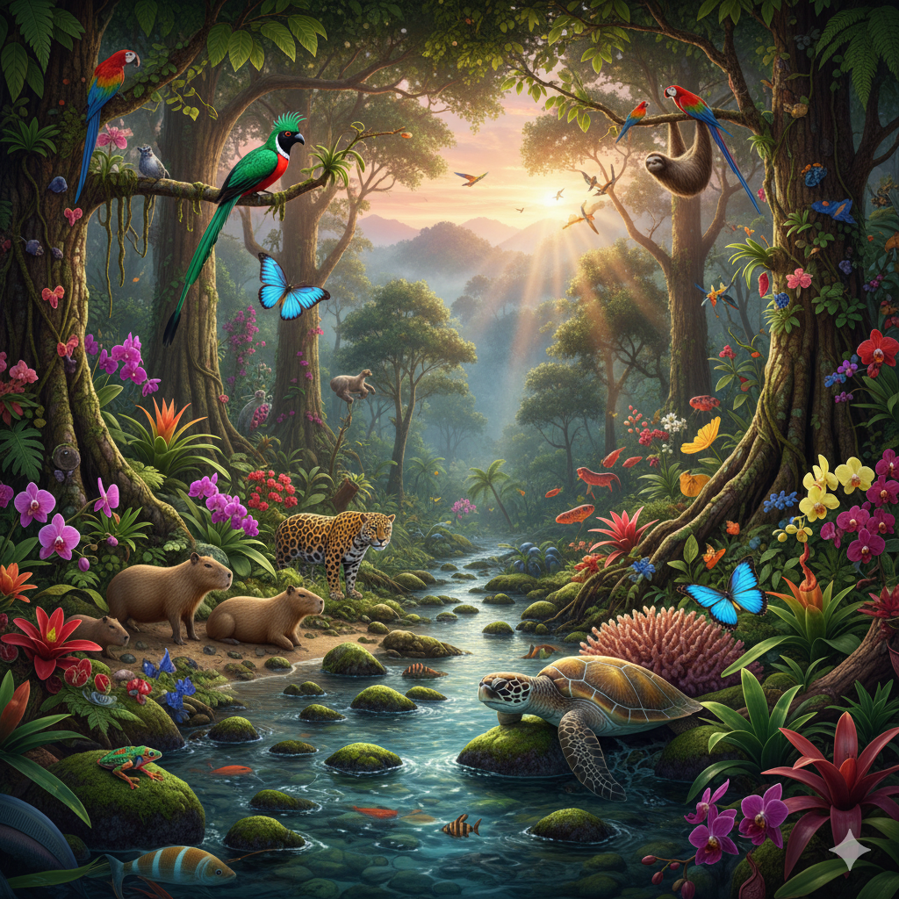
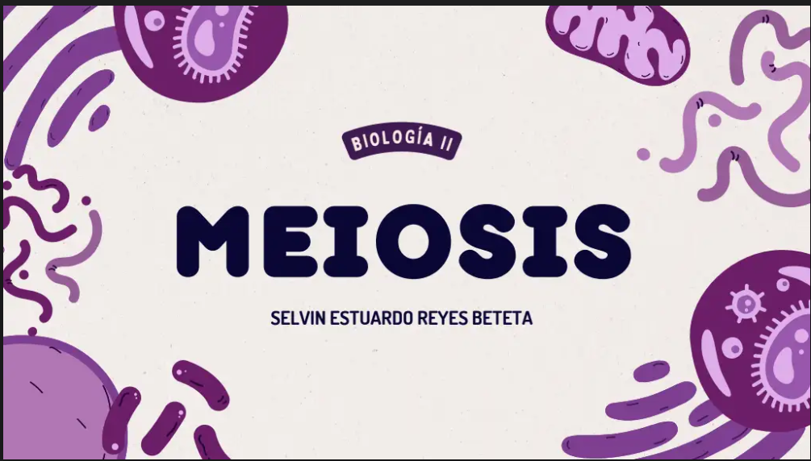
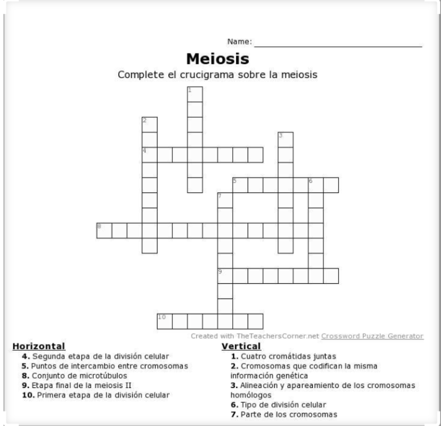
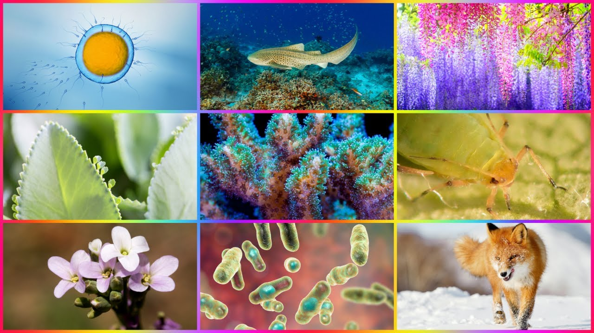

Profesorado de Enseñanza Media en Matemática y Física - USAC - CUSACQ
Año 2025
Visitas: Cargando...
Post 1: Bienvenida al Blog de Biología
¡Bienvenidos a mi blog personal de Biología II! En este espacio compartiré mis aprendizajes, tareas y proyectos relacionados con el curso. A continuación, encontrarás recursos multimedia que enriquecerán nuestro estudio de la biología.

Descripción: Esta imagen representa la increíble diversidad de la vida en nuestro planeta, desde microorganismos hasta ecosistemas complejos.
Descripción: Este video educativo explora los fundamentos de la biología celular y los procesos vitales que caracterizan a los seres vivos.
Descripción:OpenStax es una fuente fiable y gratuita para obtener libros de texto universitarios y de secundaria completos y de buena calidad, lo que la convierte en un recurso excelente para estudiar Biología u otras asignaturas..
Agregar comentario:
Post 2: Tareas del Parcial 1
En este post presento tres de las tareas realizadas para el primer parcial del curso, centradas en el tema de la reproducción.
Tareas Publicadas:
Diapositivas sobre Reproducción:
Presentación que desarrollé para la exposición en clase, abordando los diferentes mecanismos de reproducción en seres vivos.
Importancia: Esta presentación sintetiza conceptos clave sobre reproducción asexual y sexual, facilitando la comprensión de estos procesos fundamentales.
Composición original que explica procesos biológicos a través de la música.
Importancia: La musicalización de conceptos científicos facilita la retención de información y hace el aprendizaje más ameno y creativo.

Imagen representativa de las diapositivas sobre reproducción que preparé para la clase.

Ejemplo del crucigrama con términos relacionados con la reproducción biológica.
Agregar comentario:
Post 3: Tareas del Parcial 2
En esta entrada del blog comparto dos de las tareas desarrolladas para el segundo parcial, enfocadas en taxones o grupos de seres vivos.
Tareas Publicadas:
Diapositivas sobre Taxones:
Presentación que elaboré sobre diferentes grupos taxonómicos de seres vivos y sus características distintivas.
Importancia: Comprender la clasificación taxonómica es fundamental para organizar el conocimiento sobre la diversidad biológica y las relaciones evolutivas.
Grabación que documenta procesos de reproducción en un ambiente natural.
Importancia: Observar estos procesos en su hábitat natural permite comprender mejor las adaptaciones y estrategias reproductivas de diferentes especies.
Representación visual de la clasificación taxonómica de los seres vivos.

Fotografía que ilustra procesos reproductivos observados en ambientes naturales.
Agregar comentario:
×
Información Importante
Bienvenidos a mi blog de biología, un espacio dedicado al aprendizaje y la divulgación de los conceptos fundamentales de esta ciencia. Aquí encontrarás explicaciones claras y detalladas sobre diversos temas, desde la estructura celular hasta la evolución y la diversidad de la vida. El contenido está diseñado para apoyar tanto a estudiantes como a entusiastas de la biología, ofreciendo recursos como guías de laboratorio, materiales audiovisuales y actividades interactivas. Además, se promueve un enfoque integral que combina el estudio académico con el bienestar personal y la espiritualidad, reconociendo que el aprendizaje de la biología puede ser exigente pero también profundamente enriquecedor. Si deseas profundizar en algún tema específico, no dudes en explorar las secciones del blog.
.
NOTA FINAL:Gracais por visitar espero que que te la hayas pasado muy bien
Agregar comentario: